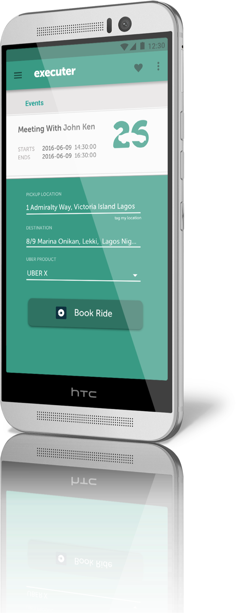
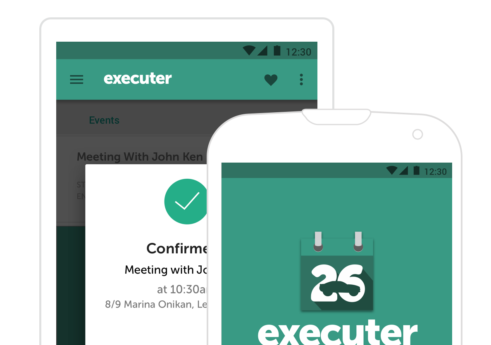

Automatically call Ubers for your events and meetings
You guys blew us away. - Uber PM

SYNC
Synchronize with your calendar to
fetch all your events and meetings
SCHEDULE
Schedule Ubers for all your events
according to time and location
features
Save time and schedule smarter
Integrates with Google Calendar to target events that require transportation
Be prompt for every meeting
Incorporates traffic and distance data to ensure on-time arrival for calendar events
Built for Android and iOS

Executer’s target users include business people traveling to several meetings across a new city, executive assistants looking to automate scheduling work, and busy urbanites navigating between several social functions.